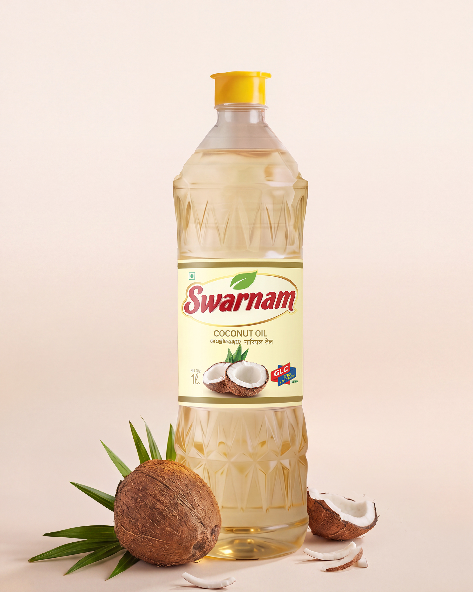

Pure coconut oil from Swarnam Group. For your aviyal, your hair, your morning uzhichil — and for everything Kerala has used coconut oil for, since long before anyone called it a superfood.

Aviyal, thoran, olan, fish curry. The entire backbone of Kerala cooking. Other oils change the dish. Coconut oil completes it.
Generations of Kerala women knew what research now confirms: coconut oil reduces protein loss in hair.
A traditional moisturizer, studied for its effect on dry skin and skin barrier function.
From the nilavilakku to the oil for newborns, coconut oil is woven into Kerala's daily life.
Coconut oil has been part of Kerala kitchens for generations. Here's why it continues to earn its place.
Suitable for sautéing, shallow frying and the high-heat cooking that everyday Kerala cuisine demands.
Its naturally saturated fat structure makes coconut oil resistant to oxidation during cooking compared with many refined seed oils.
Use it when you want authentic coconut aroma in the dish. Switch to Rice Bran Oil or Swarnam Nallenna when you prefer a lighter flavour profile.
We are not going to claim coconut oil cures diseases. We are going to say this: it is the oil Kerala has cooked with for more than two thousand years—and that history deserves respect.
From everyday household packs to commercial and export quantities.
Everything you need to know about Swarnam Coconut Oil.
Yes. Swarnam Coconut Oil is 100% pure coconut oil with no blending oils, no additives and no unnecessary chemical refining beyond FSSAI edible-grade standards.
Yes. Because it is edible-grade coconut oil, it is also suitable for topical use including hair care, skin moisturising and traditional Ayurvedic applications.
Yes. Coconut oil has a naturally stable fat structure that resists oxidation at higher temperatures, making it suitable for sautéing, shallow frying and other high-flame Indian cooking methods.